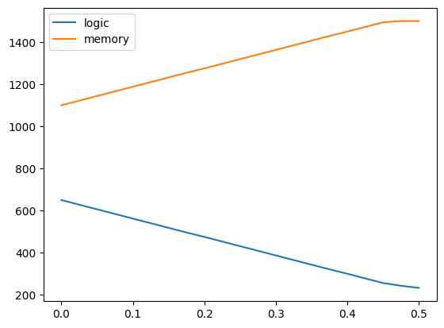
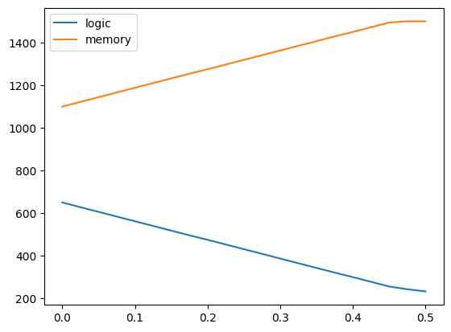

Various robust versions of BIM production problem
Contents
Various robust versions of BIM production problem#
# install Pyomo and solvers
import requests
import types
url = "https://raw.githubusercontent.com/mobook/MO-book/main/python/helper.py"
helper = types.ModuleType("helper")
exec(requests.get(url).content, helper.__dict__)
helper.install_pyomo()
helper.install_cbc()
helper.install_ipopt()
helper.install_gurobi()
helper.install_xpress()
helper.install_cplex()
import pyomo.environ as pyo
cbc = pyo.SolverFactory('cbc')
ipopt = pyo.SolverFactory('ipopt')
cplex = pyo.SolverFactory('cplex_direct')
gurobi = pyo.SolverFactory('gurobi_direct')
xpress = pyo.SolverFactory('xpress_direct')
%matplotlib inline
pyomo was previously installed
cbc was previously installed
ipopt was previously installed
gurobi was previously installed
Xpress was previously installed
cplex was previously installed
Original BIM production planning model#
The full description of the BIM production problem, can be found here here. The resulting optimization problem was the following LP:
def JustSolution( model ):
return print('The optimal solution is x=',[pyo.value(model.x[t]) for t in chips],'and yields a profit of',pyo.value(model.profit))
chips = [ 'logic', 'memory' ]
profits = { 'logic' : 12, 'memory' : 9 }
copper = { 'logic' : 4, 'memory' : 2 }
m = pyo.ConcreteModel('BIM basic problem')
m.x = pyo.Var(chips,within=pyo.NonNegativeReals)
m.profit = pyo.Objective(expr = pyo.quicksum([profits[t]*m.x[t] for t in chips]), sense=pyo.maximize)
m.silicon = pyo.Constraint(expr = m.x['logic'] <= 1000)
m.gemanium = pyo.Constraint(expr = m.x['memory'] <= 1500)
m.plastic = pyo.Constraint(expr = pyo.quicksum([m.x[t] for t in chips]) <= 1750)
m.copper = pyo.Constraint(expr = pyo.quicksum(copper[t]*m.x[t] for t in chips) <= 4800 )
cbc.solve(m)
JustSolution(m)
The optimal solution is x= [650.0, 1100.0] and yields a profit of 17700.0
def ShowDuals( model ):
import fractions
# display all duals
print ("Dual variables:")
for c in model.component_objects(pyo.Constraint, active=True):
print ("Constraint ",c)
for index in c:
print (" ", index, str(fractions.Fraction(model.dual[c[index]])))
m.dual = pyo.Suffix(direction=pyo.Suffix.IMPORT)
cbc.solve(m)
ShowDuals( m )
Dual variables:
Constraint silicon
None 0
Constraint gemanium
None 0
Constraint plastic
None 6
Constraint copper
None 3/2
Uncertainty in copper usage during production#
Suppose now that the company BIM notices that not the amount of copper needed for the two types of microchips is not exactly 4 and 2 gr, but varies due to some external factors affecting the production process. How does this uncertainty affect the optimal production plan?
To get a feeling for what happens, let us first perform some simulations and data analysis on them. We start by simulating a sample of observed copper consumptions pairs for the production of 2000 f logic chips and 2000 g memory chips. The amounts vary around the original values, 4 gr and 2 gr, respectively.
import numpy as np
import matplotlib.pyplot as plt
np.random.seed(2021)
n = 2000
f = np.random.lognormal(np.log(4.), .005, n)
g = np.random.lognormal(np.log(2.), .005, n)
plt.figure()
plt.plot( f, g, '.' )
plt.show()
A very simple and somehow naive uncertainty set can be the minimal box that contains all the simulated data.
import matplotlib.patches as patches
plt.figure()
plt.plot( f, g, '.' )
currentAxis = plt.gca()
currentAxis.add_patch(patches.Rectangle((min(f), min(g)), max(f)-min(f), max(g)-min(g),fill=False,color='r'))
plt.show()
A robust model with box uncertainty for copper consumption#
BIM wants to be sure that their production does not violate the copper constraint, therefore they consider the following robust variant of their optimization model:
The above model has an infinite number of constraints, one for every realization of the uncertain coefficients \(a\). However, using linear duality, we can deal with this and obtain a LP that we can solve.
The first thing to notice is that the copper consumption is modeled by constraints that are equivalent to bounding the following optimization problem:
Or
Now we use linear duality to realize that the above is equivalent to:
and the constraint imposed by the last problem is equivalent to:
The only thing we need to do is add the new auxiliary variables and constraints to the original model and implement them in Pyomo.
def BIMWithBoxUncertainty( lower, upper, domain=pyo.NonNegativeReals ):
m = pyo.ConcreteModel('BIM with Box Uncertainty')
m.x = pyo.Var(chips,within=domain)
m.profit = pyo.Objective(expr = sum([profits[t]*m.x[t] for t in chips]), sense=pyo.maximize)
m.silicon = pyo.Constraint(expr = m.x['logic'] <= 1000)
m.germanium = pyo.Constraint(expr = m.x['memory'] <= 1500)
m.plastic = pyo.Constraint(expr = sum([m.x[t] for t in chips]) <= 1750)
m.y = pyo.Var(chips,domain=pyo.NonNegativeReals)
m.w = pyo.Var(chips,domain=pyo.NonNegativeReals)
m.robustcopper = pyo.Constraint(expr = sum([upper[t]*m.y[t] - lower[t]*m.w[t] for t in chips]) <= 4800)
def PerVariable( model, t ):
return model.x[t] == model.y[t] - model.w[t]
m.perVariable = pyo.Constraint(chips,rule=PerVariable)
return m
lower = upper = {}
lower['logic'] = min(f)
upper['logic'] = max(f)
lower['memory'] = min(g)
upper['memory'] = max(g)
m = BIMWithBoxUncertainty( lower, upper, domain=pyo.NonNegativeIntegers )
cbc.solve(m)
JustSolution( m )
The optimal solution is x= [608.0, 1142.0] and yields a profit of 17574.0
We may want to impose the box uncertainty set to be symmetric with respect to the nominal values and just choose its width \(\delta\). This leads to a different optimal robust solution.
# you can play with the amount of uncertainty.
# In particular, if below you make delta equal to 0 you obtain the same result as the nominal model.
delta = 0.05
def BIMWithSymmetricalBoxUncertainty( delta, domain=pyo.NonNegativeIntegers ):
lower = { chip : copper[chip] - delta for chip in chips }
upper = { chip : copper[chip] + delta for chip in chips }
return BIMWithBoxUncertainty( lower, upper, domain=domain )
m = BIMWithSymmetricalBoxUncertainty( delta )
cbc.solve(m)
JustSolution( m )
The optimal solution is x= [606.0, 1144.0] and yields a profit of 17568.0
Integer optimization#
The original BIM model gave integer solutions, but not the robust version. If we need integer solutions then we should impose that to the nature of the variables, which in this case of box uncertainty is easy to do since the model remains linear, although it will be mixed integer.
m = BIMWithBoxUncertainty( lower, upper, domain=pyo.NonNegativeIntegers )
cbc.solve(m)
JustSolution( m )
The optimal solution is x= [608.0, 1142.0] and yields a profit of 17574.0
Let us see how the optimal solution behave as we vary the width of the box uncertainty set \(\delta\) from 0 to 0.5.
import pandas as pd
df = pd.DataFrame()
for delta in np.linspace(0,.5,21):
m = BIMWithSymmetricalBoxUncertainty( delta, domain=pyo.NonNegativeIntegers )
cbc.solve(m)
results = [ pyo.value(m.profit) ] + [ pyo.value(m.x[i]) for i in chips ]
df.at[delta,'profit'] = results[0]
df.at[delta,chips[0]] = results[1]
df.at[delta,chips[1]] = results[2]
df
| profit | logic | memory | |
|---|---|---|---|
| 0.000 | 17700.0 | 650.0 | 1100.0 |
| 0.025 | 17634.0 | 628.0 | 1122.0 |
| 0.050 | 17568.0 | 606.0 | 1144.0 |
| 0.075 | 17502.0 | 584.0 | 1166.0 |
| 0.100 | 17436.0 | 562.0 | 1188.0 |
| 0.125 | 17370.0 | 540.0 | 1210.0 |
| 0.150 | 17304.0 | 518.0 | 1232.0 |
| 0.175 | 17238.0 | 496.0 | 1254.0 |
| 0.200 | 17175.0 | 475.0 | 1275.0 |
| 0.225 | 17109.0 | 453.0 | 1297.0 |
| 0.250 | 17043.0 | 431.0 | 1319.0 |
| 0.275 | 16977.0 | 409.0 | 1341.0 |
| 0.300 | 16911.0 | 387.0 | 1363.0 |
| 0.325 | 16845.0 | 365.0 | 1385.0 |
| 0.350 | 16779.0 | 343.0 | 1407.0 |
| 0.375 | 16713.0 | 321.0 | 1429.0 |
| 0.400 | 16650.0 | 300.0 | 1450.0 |
| 0.425 | 16584.0 | 278.0 | 1472.0 |
| 0.450 | 16518.0 | 256.0 | 1494.0 |
| 0.475 | 16416.0 | 243.0 | 1500.0 |
| 0.500 | 16296.0 | 233.0 | 1500.0 |
We can visualize how these quantities change as a function of \(\delta\):
df.plot()
plt.show()
df[['logic','memory']].plot()
plt.show()
 

Cardinality constrained uncertainty#
Let us now make different assumptions regarding the uncertainty related to the copper consumption.
More specifically, we now assume that each uncertain coefficient \(a_j\) may deviate by at most \(\pm \delta_j\) from the nominal value \(\bar{a}_j\) bun no more than \(\Gamma\) will actually deviate.
Lagrange duality yields the following modification to the problem as equivalent to the robust model stated above:
def BIMWithGammaUncertainty( delta, gamma, domain=pyo.NonNegativeReals ):
m = pyo.ConcreteModel('BIM with Cardinality Constrained Uncertainty')
m.x = pyo.Var(chips,within=domain)
m.profit = pyo.Objective(expr = sum([profits[t]*m.x[t] for t in chips]), sense=pyo.maximize)
m.silicon = pyo.Constraint(expr = m.x['logic'] <= 1000)
m.germanium = pyo.Constraint(expr = m.x['memory'] <= 1500)
m.plastic = pyo.Constraint(expr = sum([m.x[t] for t in chips]) <= 1750)
m.z = pyo.Var(chips,domain=pyo.NonNegativeReals)
m.lam = pyo.Var(domain=pyo.NonNegativeReals)
m.robustcopper = pyo.Constraint( \
expr = sum([copper[t]*m.x[t] for t in chips]) \
+ gamma * m.lam \
+ sum(m.z[t] for t in chips) <= 4800)
def up_rule( model, t ):
return model.z[t] >= delta * model.x[t] - model.lam
def down_rule( model, t ):
return model.z[t] >= -delta * model.x[t] - model.lam
m.up = pyo.Constraint(chips,rule=up_rule)
m.down = pyo.Constraint(chips,rule=down_rule)
return m
m = BIMWithGammaUncertainty( 0.01, 2, domain=pyo.NonNegativeIntegers )
cbc.solve(m)
JustSolution(m)
The optimal solution is x= [641.0, 1109.0] and yields a profit of 17673.0
Ball uncertainty set#
Let us now make yet another different assumptions regarding the uncertainty related to the copper consumption.
More specifically, we assume that the two uncertain coefficients \(a_1\) and \(a_2\) can vary in a 2-dimensional ball centered around the point \((4,2)\) and with radius 1.
A straightforward reformulation leads to that:
By defining \(y = 4800 - a_1x_1 - a_2x_2\) we may write: $\( \Omega^2 \|x\|^2 \leq y^2 \)$
with \(w = \Omega x\).
We now need to add this newly obtained conic constraint to the original BIM model. The Pyomo documentation says a conic constraint is expressed in ‘pyomo’ in simple variables and this table reports the syntax.
import pyomo.kernel as pyk
def BIMWithBallUncertainty( omega, domain_type=pyk.RealSet ):
idxTrophies = range( len(chips) )
m = pyk.block()
m.x = pyk.variable_list()
for i in idxTrophies:
m.x.append( pyk.variable(lb=0,domain_type=domain_type) )
m.profit = pyk.objective(expr = sum(profits[chips[i]]*m.x[i] for i in idxTrophies), sense=pyk.maximize)
m.silicon = pyk.constraint(expr = m.x[0] <= 1000)
m.germanium = pyk.constraint(expr = m.x[1] <= 1500)
m.plastic = pyk.constraint(expr = sum([m.x[i] for i in idxTrophies]) <= 1750)
m.y = pyk.variable(lb=0)
m.w = pyk.variable_list()
for i in idxTrophies:
m.w.append( pyk.variable(lb=0) )
m.copper = pyk.constraint( expr = m.y == 4800 - sum(copper[chips[i]]*m.x[i] for i in idxTrophies) )
m.xtow = pyk.constraint_list()
for i in idxTrophies:
m.xtow.append( pyk.constraint( expr = m.w[i] == omega * m.x[i] ) )
from pyomo.core.kernel.conic import quadratic
m.robust = quadratic(m.y,m.w)
return m
Now the optimization problem is nonlinear, but dedicated solver can levarage the fact that is conic and solve it efficiently. Specifically, cplex, gurobi and xpress support second order cones. On the other hand, ipotp is a generic solver for nonlinear optimization problem.
m = BIMWithBallUncertainty( 0.1 )
results = gurobi.solve(m)
print('Solver status=',results.solver.status, 'and solver terminal condition=',results.solver.termination_condition )
print('The optimal solution is x=',[round(pyk.value(m.x[i]),3) for i in range(len(m.x))],'and yields a profit of',round(pyk.value(m.profit),3))
print()
results = cplex.solve(m)
print('Solver status=',results.solver.status, 'and solver terminal condition=',results.solver.termination_condition )
print('The optimal solution is x=',[round(pyk.value(m.x[i]),3) for i in range(len(m.x))],'and yields a profit of',round(pyk.value(m.profit),3))
print()
results = xpress.solve(m)
print('Solver status=',results.solver.status, 'and solver terminal condition=',results.solver.termination_condition )
print('The optimal solution is x=',[round(pyk.value(m.x[i]),3) for i in range(len(m.x))],'and yields a profit of',round(pyk.value(m.profit),3))
print()
results = ipopt.solve(m)
print('Solver status=',results.solver.status, 'and solver terminal condition=',results.solver.termination_condition )
print('The optimal solution is x=',[round(pyk.value(m.x[i]),3) for i in range(len(m.x))],'and yields a profit of',round(pyk.value(m.profit),3))
print()
Solver status= ok and solver terminal condition= optimal
The optimal solution is x= [584.814, 1165.186] and yields a profit of 17504.443
Solver status= ok and solver terminal condition= optimal
The optimal solution is x= [584.814, 1165.186] and yields a profit of 17504.443
Solver status= ok and solver terminal condition= optimal
The optimal solution is x= [584.814, 1165.185] and yields a profit of 17504.441
Solver status= ok and solver terminal condition= optimal
The optimal solution is x= [584.814, 1165.186] and yields a profit of 17504.443
The solvers cplex, gurobi and xpress are capable of solving the mixed integer version of the same model:
m = BIMWithBallUncertainty( 0.1, domain_type=pyk.IntegerSet )
results = gurobi.solve(m)
print('Solver status=',results.solver.status, 'and solver terminal condition=',results.solver.termination_condition )
print('The optimal solution is x=',[round(pyk.value(m.x[i]),3) for i in range(len(m.x))],'and yields a profit of',round(pyk.value(m.profit),3))
print()
results = cplex.solve(m)
print('Solver status=',results.solver.status, 'and solver terminal condition=',results.solver.termination_condition )
print('The optimal solution is x=',[round(pyk.value(m.x[i]),3) for i in range(len(m.x))],'and yields a profit of',round(pyk.value(m.profit),3))
print()
results = xpress.solve(m)
print('Solver status=',results.solver.status, 'and solver terminal condition=',results.solver.termination_condition )
print('The optimal solution is x=',[round(pyk.value(m.x[i]),3) for i in range(len(m.x))],'and yields a profit of',round(pyk.value(m.profit),3))
print()
Solver status= ok and solver terminal condition= optimal
The optimal solution is x= [584.0, 1166.0] and yields a profit of 17502.0
Solver status= ok and solver terminal condition= optimal
The optimal solution is x= [584.0, 1166.0] and yields a profit of 17502.0
Solver status= ok and solver terminal condition= optimal
The optimal solution is x= [584.0, 1166.0] and yields a profit of 17502.0
How to implement second order cones using pyomo.environ#
Noting that \(\| x \| \leq t\) is for \(t \geq 0\) equivalent to \(\| x \|^2 \leq t^2\) and knowing that the commercial solvers (gurobi, cplex and express) support convex quadratic inequalities, we can model this variant in pyomo.environ as follows. Note that the essential part to make the model convex is having the right hand side nonnegative.
def BIMWithBallUncertaintyAsSquaredSecondOrderCone(omega, domain=pyo.NonNegativeReals):
m = pyo.ConcreteModel('BIM with Ball Uncertainty as SOC')
m.x = pyo.Var(chips,within=domain)
# the nonegativity of this variable is essential!
m.y = pyo.Var(within=pyo.NonNegativeReals)
m.profit = pyo.Objective(expr = sum([profits[t]*m.x[t] for t in chips]), sense=pyo.maximize)
m.silicon = pyo.Constraint(expr = m.x['logic'] <= 1000)
m.germanium = pyo.Constraint(expr = m.x['memory'] <= 1500)
m.plastic = pyo.Constraint(expr = sum([m.x[t] for t in chips]) <= 1750)
m.copper = pyo.Constraint(expr = m.y == 4800 - sum(copper[t]*m.x[t] for t in chips) )
m.robust = pyo.Constraint(expr = sum((omega*m.x[t])**2 for t in chips) <= m.y**2)
return m
m = BIMWithBallUncertaintyAsSquaredSecondOrderCone( 0.1, domain=pyo.NonNegativeIntegers )
results = cplex.solve(m)
print('Solver status=',results.solver.status, 'and solver terminal condition=',results.solver.termination_condition )
JustSolution(m)
Solver status= ok and solver terminal condition= optimal
The optimal solution is x= [584.0, 1166.0] and yields a profit of 17502.0
Note how the verbose xpress solver confirms that the convex quadratic constraint is recognized as conic.
m = BIMWithBallUncertaintyAsSquaredSecondOrderCone( 0.1, domain=pyo.NonNegativeIntegers )
results = xpress.solve(m,tee=True)
print()
print('Solver status=',results.solver.status, 'and solver terminal condition=',results.solver.termination_condition )
JustSolution(m)
FICO Xpress v8.14.2, Community, solve started 18:55:47, Oct 25, 2022
Heap usage: 382KB (peak 382KB, 318KB system)
Maximizing MIQCQP BIM with Ball Uncertainty as SOC using up to 12 threads and up to 32GB memory, with these control settings:
OUTPUTLOG = 1
Original problem has:
5 rows 3 cols 7 elements 2 globals
1 qrows 3 qrowelem
Converted 1 second order cones to standard form
Presolved problem has:
7 rows 7 cols 12 elements 2 globals
2 cones 4 celems
LP relaxation tightened
Presolve finished in 0 seconds
Heap usage: 415KB (peak 417KB, 318KB system)
Coefficient range original solved
Coefficients [min,max] : [ 1.00e+00, 4.00e+00] / [ 1.00e-01, 1.00e+00]
RHS and bounds [min,max] : [ 1.00e+03, 4.80e+03] / [ 1.00e+02, 4.80e+03]
Objective [min,max] : [ 9.00e+00, 1.20e+01] / [ 9.00e+00, 1.20e+01]
Quadratic [min,max] : [ 2.00e-02, 2.00e+00] / [ 2.00e+00, 2.00e+00]
Autoscaling applied standard scaling
Will try to keep branch and bound tree memory usage below 30.3GB
Barrier cache sizes : L1=32K L2=9216K
Using AVX support
Cores per CPU (CORESPERCPU): 12
Barrier starts after 0 seconds, using up to 12 threads, 6 cores
Matrix ordering - Dense cols.: 6 NZ(L): 65 Flops: 204
Its P.inf D.inf U.inf Primal obj. Dual obj. Compl.
0 1.75e+03 1.20e+01 4.80e+03 2.1000000e+01 1.7150000e+04 2.1e+01
1 4.73e+02 3.25e+00 1.30e+03 3.7148331e+01 1.7130804e+04 6.2e+00
2 3.48e+01 2.39e-01 9.56e+01 3.7906861e+02 1.6712679e+04 4.7e-01
3 1.82e+00 1.25e-02 4.99e+00 5.1718692e+03 1.2952061e+04 2.5e-02
4 5.17e-01 3.55e-03 1.42e+00 1.4287413e+04 1.6854657e+04 8.0e-03
5 9.09e-02 6.24e-04 2.50e-01 1.6927027e+04 1.7374898e+04 1.7e-03
6 7.22e-02 4.96e-04 1.98e-01 1.7031042e+04 1.7374638e+04 1.4e-03
7 1.84e-02 1.27e-04 5.06e-02 1.7399322e+04 1.7483081e+04 3.7e-04
8 8.88e-03 6.10e-05 2.44e-02 1.7455817e+04 1.7494083e+04 1.9e-04
9 3.91e-03 2.69e-05 1.07e-02 1.7483553e+04 1.7500381e+04 8.4e-05
10 3.27e-03 2.25e-05 8.99e-03 1.7487593e+04 1.7501220e+04 7.2e-05
11 1.83e-03 1.26e-05 5.03e-03 1.7495119e+04 1.7502724e+04 4.0e-05
12 1.16e-03 7.94e-06 3.17e-03 1.7498613e+04 1.7503341e+04 2.6e-05
13 3.73e-04 2.56e-06 1.02e-03 1.7502500e+04 1.7504010e+04 8.5e-06
14 7.67e-06 5.27e-08 2.11e-05 1.7504405e+04 1.7504436e+04 1.7e-07
15 1.60e-06 1.10e-08 4.40e-06 1.7504435e+04 1.7504441e+04 3.6e-08
16 2.38e-07 1.64e-09 6.54e-07 1.7504442e+04 1.7504443e+04 5.4e-09
Barrier method finished in 0 seconds
Crossover crash basis containing 5 structurals form 7 candidates
Crossover starts
Its Obj Value S Ninf Nneg Sum Inf Time
7 17504.45543 P 0 0 .000000 0
0 17504.45543 N 0 0 .000000 0
0 17504.45543 D 0 0 .000000 0
Crossover successful
Objective function value: 17504.44318 time: 0
0 17504.44318 P 0 0 .000000 0
Optimal solution found
Barrier solved problem
16 barrier and 7 simplex iterations in 0.01 seconds at time 0
Final objective : 1.750444317729157e+04
Max primal violation (abs/rel) : 0.0 / 0.0
Max dual violation (abs/rel) : 0.0 / 0.0
Max complementarity viol. (abs/rel) : 0.0 / 0.0
Starting root cutting & heuristics
Its Type BestSoln BestBound Sols Add Del Gap GInf Time
k 12000.00000 17504.44318 1 31.45% 0 0
c 12009.00000 17504.44318 2 31.39% 0 0
d 12018.00000 17504.44318 3 31.34% 0 0
k 17502.00000 17502.00000 4 -0.00% 0 0
*** Search completed ***
Uncrunching matrix
Final MIP objective : 1.750200000000000e+04
Final MIP bound : 1.750200000000000e+04
Solution time / primaldual integral : 0s/ 76.440665%
Number of solutions found / nodes : 4 / 1
Max primal violation (abs/rel) : 0.0 / 0.0
Max integer violation (abs ) : 0.0
Solver status= ok and solver terminal condition= optimal
The optimal solution is x= [584.0, 1166.0] and yields a profit of 17502.0